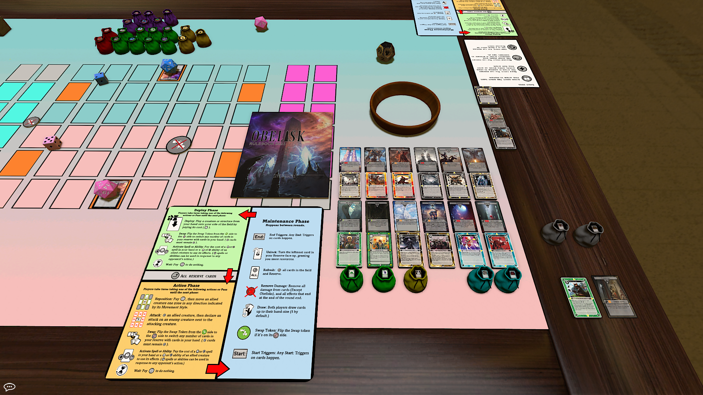
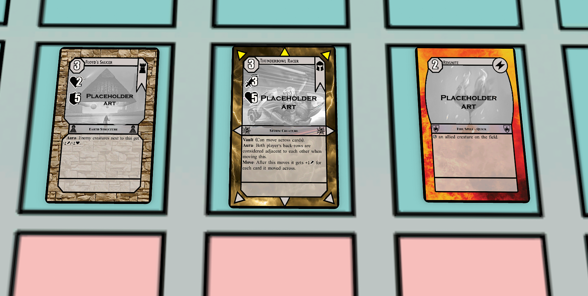
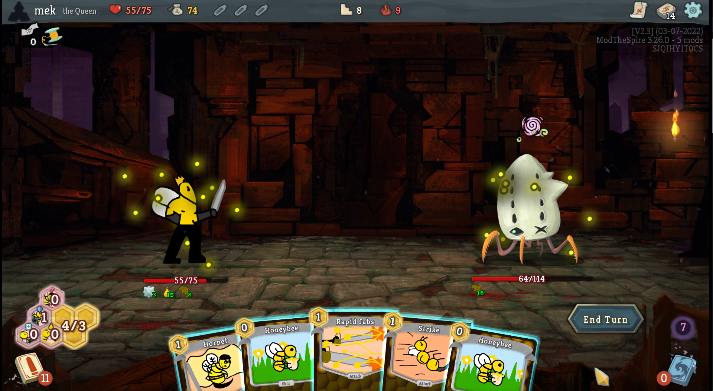

Portfolio
Max Swietnicki
New York, NY
Phone: 646-215-1690
E-mail: swietnickimax@gmail.com
Obelisk Card Game


Obelisk - LCG (Living Card Game) [2013 to present]
- Co-Game Designer, Co-Graphic Designer in a team of 2. Created the cards and the game's mechanics, and successfully pitched to a publisher (Expected release late 2022.)
- Cards are presented in Tabletop Simulator- game is designed to be a physical game.
The Queen Slay the Spire Mod

Steam Workshop Page
The Queen, a mod for Slay the Spire. [2019 to 2021]
- Solo developer, designer, artist, QA tester. (With support from the Slay the Spire modding community.)